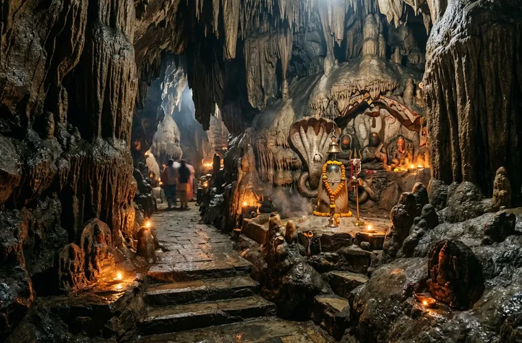
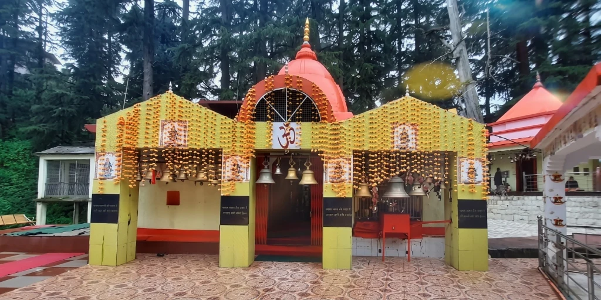

The Divine High-Altitude & Subterranean Pilgrimage
This exclusive circuit is designed for pilgrims who wish to experience the two most spiritually profound wonders of eastern Uttarakhand in a single seamless expedition: the cosmic mountain peaks of Adi Kailash (4,570m) and Om Parvat (4,246m), and the ancient underground limestone cave temple of Patal Bhuvaneshwar in Gangolihat.
While standard Adi Kailash tours skip the Gangolihat region, this special package reserves a full dedicated day for the subterranean pilgrimage into Patal Bhuvaneshwar, followed by the sacred Haat Kalika Temple, before heading into the high-altitude frontier passes of Vyas Valley.
Why Patal Bhuvaneshwar is Unmissable
Mentioned in the Manaskhanda of Skanda Purana, Patal Bhuvaneshwar is an ancient 160-meter long cave situated 90 feet deep inside the limestone hills of Gangolihat. Legend says Lord Shiva resides here and 330 million (33 koti) deities are naturally sculpted into stalactite and stalagmite rock formations. Pilgrims view the miraculous rock shapes of Sheshnag, Kalpavriksha, Lord Ganesha's severed head, and holy water dripping endlessly onto sacred Shivlings.
Key Expedition Details
| Parameter | Details |
|---|---|
| Duration | 4 Days / 3 Nights (Pithoragarh) | 7 Days / 6 Nights (Kathgodam/Delhi) |
| Starting Price | ₹22,000 per person (Pithoragarh) |
| Core Route | Pithoragarh → Gangolihat (Patal Bhuvaneshwar) → Dharchula → Gunji/Nabi → Jyolingkong (Adi Kailash) → Nabidhang (Om Parvat) → Pithoragarh |
| Max Altitude | 4,570 m at Jyolingkong (Adi Kailash Base) |
| Cave Depth | 90 feet underground descent / 160m tunnel at 1,350m MSL |
| Transport | 4x4 Mahindra Bolero for rugged Himalayan & border roads |
| Accommodation | Hotel in Dharchula + Authentic Bhotiya tribal homestay in Nabi/Gunji |
| Permits | Inner Line Permit (ILP) 100% managed via SDM Dharchula |
| Best Season | May–June & September–October |
Highlights of this Sacred Journey
- Adi Kailash & Parvati Sarovar (4,570m): Sacred darshan of the Chhota Kailash peak reflecting in the holy glacial waters of Parvati Sarovar.
- Om Parvat Darshan (4,246m): Witness the miraculous natural snow formation forming the sacred symbol "ॐ" on the face of the mountain.
- Patal Bhuvaneshwar Cave Temple (Gangolihat): Descend 90 feet underground through chains into the natural limestone cave shrine of 33 crore deities.
- Haat Kalika Temple: Visit the famous Shaktipeeth in Gangolihat, revered guardian deity of the Indian Army's Kumaon Regiment.
- Kalapani Kali Mata Mandir: Visit the origin spring of the sacred Kali River and ancient Vyas Gufa near the Indo-Nepal border.
- Direct Local Operator: Native drivers, dedicated 4x4 Boleros, and warm hospitality by Bhotiya families in Nabi village.
Places You Will Visit During This Expedition
Explore the sacred subterranean cave sanctuary, ancient Shaktipeeth, and the Himalayan heights of Adi Kailash and Om Parvat:

PATAL BHUVANESHWAR
Mystical subterranean limestone cave temple 90 feet deep, enshrining naturally carved rock formations of 33 crore deities.

HAAT KALIKA MATA MANDIR
Revered ancient Mahakali Shaktipeeth established by Adi Shankaracharya, guardian deity of the Indian Army's Kumaon Regiment.

MANOKAMNA TEMPLE
Sacred wish-fulfilling Himalayan shrine nestled amidst mountain cedar groves enroute to Vyas Valley.

ADI KAILASH
Revered Himalayan massif rising over the Vyas Valley at 4,570m, holy meditation abode of Lord Shiva.

OM PARVAT
Miraculous 5,590m peak viewed from Nabidhang (4,246m) where snow naturally forms the syllable ॐ.

KAALI MATA TEMPLE (KALAPANI)
Sacred ancient temple at Kalapani, marking the holy origin spring of the Kali River along the border.
Day-by-Day Expedition Itinerary
The schedule below illustrates the 4-Day Pithoragarh base itinerary. For Kathgodam and Delhi options, Days 1 & 7 cover transit via Jageshwar Dham, Chitai Golu Devta & Kainchi Dham.
Day 1: Pithoragarh → Gangolihat (Patal Bhuvaneshwar Cave) → Dharchula
Day 1Early morning departure from Pithoragarh to Gangolihat (approx. 75 km, 2.5 hrs). Arrive at the holy complex of Patal Bhuvaneshwar. Descend through the narrow limestone cavern guided by iron chains to witness the subterranean rock formations of Lord Shiva, Sheshnag, and the 33 koti deities. Next, visit the revered Haat Kalika Temple in Gangolihat town.
After lunch, drive along the Kali River gorge towards Dharchula (915m). Check-in at hotel/guesthouse. Evening verification of Inner Line Permits and medical fitness documentation. Dinner and overnight at Dharchula.
Drive Distance: ~165 km | Time: ~6.5 hrs | Altitude: 915 m | Night Halt: Dharchula
Day 2: Dharchula → Chialekh Pass → Garbyang → Nabi / Gunji (Vyas Valley)
Day 2Board our rugged 4x4 Mahindra Boleros after breakfast. Drive on the thrilling border road along the roaring Kali River. Cross ITBP security gates, pass through Malpa, and make the steep scenic climb to Chialekh Pass (entry gate to Vyas Valley), offering carpeted alpine meadows and prayer flags.
Drive past the sinking heritage village of Garbyang and arrive at Nabi or Gunji village (3,200m). Traditional Bhotiya welcome with warm herbal tea. Rest and light acclimatization walk. Warm organic Kumaoni dinner and overnight at homestay.
Drive Distance: ~75 km | Time: ~4.5 hrs | Altitude: 3,200 m | Night Halt: Nabi / Gunji
Day 3: Gunji → Jyolingkong (4,570m) → Sacred Adi Kailash & Parvati Sarovar
Day 3Early morning drive to Jyolingkong base (4,570m). Witness the awe-inspiring, snow-mantled pyramid of Adi Kailash (5,945m) towering directly in front of you. Walk to the banks of the crystalline Parvati Sarovar and perform sacred pooja and prayers at the ancient Shiva-Parvati Temple.
Trekkers with good fitness can take the short optional hike to Gauri Kund at the foot of Adi Kailash peak. Soak in the spiritual serenity of the Himalayas. Return to Nabi/Gunji homestay for hot lunch, cultural storytelling, and overnight stay.
Max Altitude: 4,570 m | Distance: ~35 km each way | Night Halt: Nabi / Gunji
Day 4: Nabi/Gunji → Nabidhang (Om Parvat 4,246m) → Kalapani → Pithoragarh
Day 4Early morning start for Nabidhang (4,246m). Behold the divine miracle of Om Parvat, where freshly fallen snow forms the holy Sanskrit syllable "ॐ" against the black rock mountain. View the sacred Sheshnag Parvat opposite Nabidhang.
On the return drive, stop at Kalapani to offer prayers at the sacred Kali Mata Temple and the underground spring origin of the Kali River. Continue the descent past Chialekh and Dharchula, arriving back at Pithoragarh by evening with divine memories and blessings.
Max Altitude: 4,246 m | Concludes in Pithoragarh for 4-day travelers (Days 5-7 continue for Kathgodam/Delhi guests)
Package Inclusions & Exclusions
What's Included
- Dedicated 4x4 Mahindra Bolero for entire mountain & valley journey
- Inner Line Permit (ILP) documentation, SDM clearance & fees
- 1 Night stay in Dharchula (hotel / guesthouse)
- 2 Nights authentic Bhotiya tribal homestay in Nabi / Gunji
- All pure vegetarian meals (breakfast, lunch, dinner, evening tea)
- Patal Bhuvaneshwar Cave entry coordination & visit
- Haat Kalika Temple (Gangolihat) visit
- Kalapani Kali Temple & Vyas Gufa darshan
- Experienced native Himalayan driver-guide
- Medical first-aid kit & emergency portable oxygen cylinder
What's Not Included
- Pony / mule / porter charges if hired for Parvati Sarovar or Gauri Kund
- Special personal pooja or priest dakshina
- Personal travel and medical insurance
- Any expenses caused by unforeseen roadblocks, landslides, or weather delays
- Lipulekh Pass Kailash Darshan border fee (strictly subject to Army permit & payable on-site)
- Tips and gratuities for homestay staff and drivers
Pilgrim Guide to Visiting Patal Bhuvaneshwar
Patal Bhuvaneshwar is not just a geological spectacle; it is an ancient sanctum sanctorum where science, geology, and Vedic spirituality converge. Here is everything you need to know before stepping inside:
Footwear & Clothing
Footwear is not permitted inside the sanctum. Wear comfortable cotton socks as the stone pathways can be cool and damp. Wear flexible clothes allowing free movement while descending the chains.
Chain Descent
The entry tunnel descends approximately 75–80 feet down a steep incline fitted with heavy steel chains on both sides. Hold the chains firmly and step slowly. Electric lighting is provided throughout.
Photography & Mobiles
Photography and video recording inside the inner cave sanctum are strictly prohibited by the Archaeological Survey of India (ASI) to preserve the sacred sanctity and fragile stalactites.
Air & Health
The cave is ventilated with natural air circulation; however, it can feel humid and enclosed. Those with severe asthma or acute heart conditions should consult our team before entering.
Our local driver-escorts ensure timely entry tokens early in the morning so you avoid tourist queues and have peaceful, unhurried darshan inside the cavern.
Frequently Asked Questions
Both shrines represent Lord Shiva in contrasting divine forms: Adi Kailash represents the supreme celestial abode amidst the high snowy peaks, while Patal Bhuvaneshwar represents the cosmic subterranean realm where all 33 crore deities abide. Doing both together completes the full Shiv-Shakti circuit of Kumaon.
The road from Pithoragarh to Gangolihat is paved and scenic, passing through pine ridges. From Gangolihat to Dharchula, the all-weather border road along the Kali River is fully motorable and handled smoothly by our 4x4 Boleros.
Yes! We offer 7-Day complete packages starting directly from Kathgodam Railway Station (₹34,000/person) and Delhi NCR (₹39,000/person), including comfortable private cab transit via Jageshwar Dham, Chitai Golu Devta, and Neem Karoli Baba's Kainchi Dham.
You only need to provide: 1) Aadhaar Card copy (or Voter ID), 2) Passport-size photo, and 3) Basic medical fitness certificate from any MBBS doctor. Our local Dharchula office takes care of 100% of the police verification and SDM clearances.